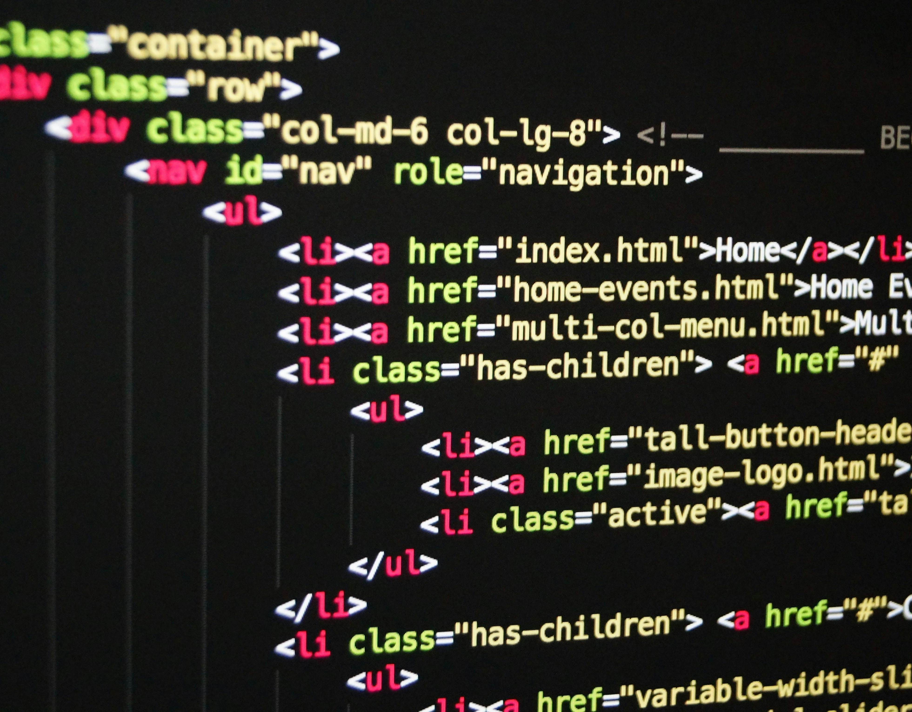

Mi chiamo Alessandro Capurro, vengo da Genova, ho 23 anni e sono nato il 15 Giugno 2002. Sono una persona creativa, curiosa, determinata e sempre alla ricerca di nuove sfide.
Una breve introduzione:
Le mie passioni:
Ho diverse passioni che variano dalla musica al fai da te, ma la mia passione principale è l'informatica. Questa mia passione è nata fin da piccolo, quando ho iniziato ad essere curioso di come funzionassero programmi come i browser ed in particolare come funzionassero le pagine web, curiosità che con il tempo si è trasformata in un vero e proprio interesse per la programmazione web lato front-end, che oggi è al centro del mio percorso di crescita.

Il mio obiettivo personale:
Il mio obiettivo è diventare uno sviluppatore front-end: adoro creare interfacce intuitive, moderne e responsive, capaci di offrire una bella esperienza utente e cerco sempre di evolvere il mio metodo di "problem solving".
Lavoro costantemente per migliorare le mie competenze con linguaggi come: HTML, CSS, JavaScript e framework come React, e sto costruendo passo dopo passo il mio percorso professionale in questo settore.
Cerchi un front-end developer?
Contattami o seguimi sui miei canali per rimanere in contatto: